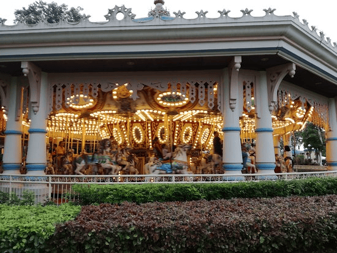
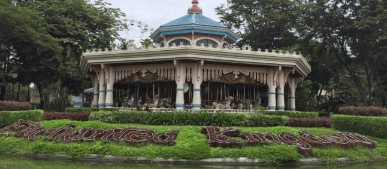
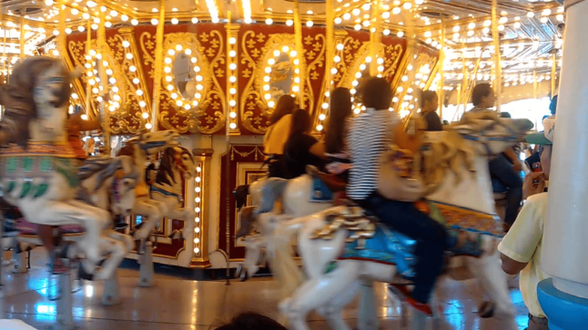

Grand Carousel
Step Into a Timeless Fairy Tale
Welcome to the majestic centerpiece of the realm! The Grand Carousel is a magnificent, vintage-style masterpiece that captures the pure, nostalgic essence of Enchanted Kingdom's magic. It serves as a gentle haven for dreamers, young and old alike, who wish to partake in a classic celebration of whimsy.
Climb atop one of the beautifully carved, ornately painted steeds or settle into a charming, gilded chariot. As the grand calliope organ strikes up its cheerful, timeless melodies, your noble mount will gracefully leap and glide beneath a canopy of thousands of glittering fairy lights. It is a breathtaking, spinning spectacle that offers a perfect, picturesque moment for every apprentice and seasoned voyager in your party.
Visions of the Voyage


